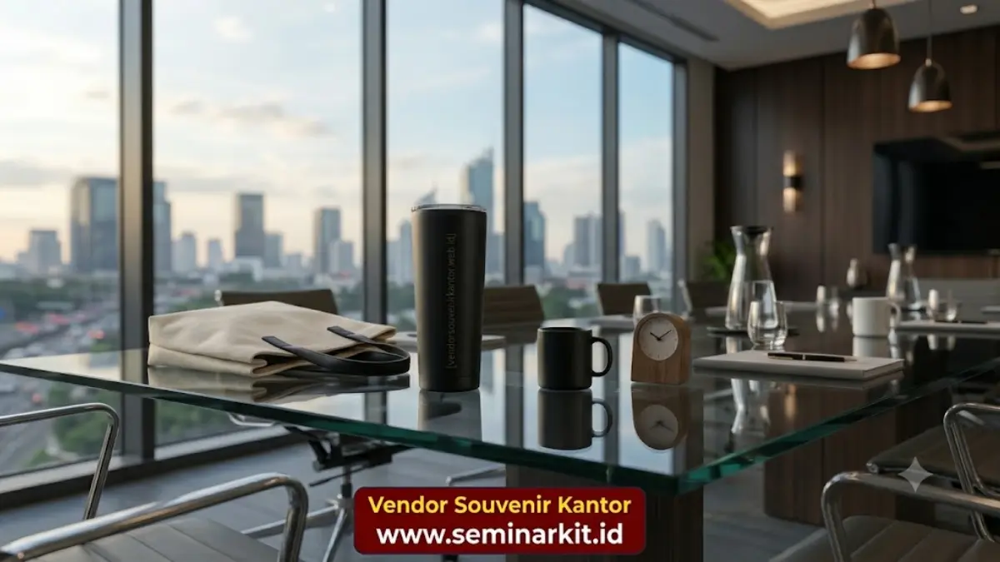

Souvenir bisnis adalah hadiah korporat berlogo yang memperkuat citra merek, mempererat relasi klien, dan meningkatkan loyalitas mitra kerja secara berkelanjutan.
Souvenir bisnis adalah barang bermerek yang diberikan perusahaan kepada klien, mitra, karyawan, atau tamu acara dengan tujuan memperkuat brand awareness sekaligus mempererat hubungan profesional.
Pemberian souvenir ini umumnya dilakukan saat pertemuan bisnis, peluncuran produk, seminar korporat, atau sebagai bentuk apresiasi akhir tahun.
Perusahaan dari berbagai skala, mulai dari startup hingga korporasi besar, memanfaatkan souvenir bisnis sebagai bagian dari strategi pemasaran yang berkelanjutan dan berbiaya efisien.
- Souvenir bisnis berfungsi sebagai media branding sekaligus alat mempererat relasi klien dan mitra kerja.
- Pemilihan desain, material, dan kualitas cetak logo sangat menentukan kesan profesional perusahaan.
- Souvenir custom dengan logo memberikan efek promosi berkelanjutan setiap kali barang digunakan penerima.
- Vendor Souvenir Kantor menyediakan berbagai pilihan souvenir bisnis premium siap custom untuk kebutuhan korporat Anda.
Apa Itu Souvenir Bisnis dan Mengapa Perusahaan Membutuhkannya?
Souvenir bisnis adalah produk fisik berlogo perusahaan yang berfungsi sebagai representasi identitas merek dalam bentuk yang dapat disentuh dan digunakan penerima.
Berbeda dengan iklan digital yang sifatnya sementara, souvenir bisnis memiliki masa pakai lebih panjang sehingga logo dan pesan perusahaan terus terlihat setiap kali barang tersebut digunakan.
Kondisi ini menjadikan souvenir bisnis sebagai investasi branding yang nilainya terus berjalan meski interaksi awal dengan klien sudah berlalu.
Kebutuhan akan souvenir bisnis umumnya muncul pada momen-momen penting seperti penandatanganan kerja sama, kunjungan klien korporat, gathering tahunan, hingga pameran dagang.
Pada momen tersebut, souvenir menjadi jembatan komunikasi non-verbal yang menunjukkan profesionalisme dan apresiasi perusahaan terhadap relasi bisnisnya.
Bagaimana Souvenir Bisnis Membantu Branding Perusahaan?
Souvenir bisnis membantu branding dengan menghadirkan logo dan identitas visual perusahaan secara berulang di lingkungan kerja maupun pribadi penerima.
Setiap kali souvenir digunakan, baik berupa alat tulis, tumbler, atau tas kerja, penerima secara tidak langsung diingatkan kembali pada perusahaan pemberi.
Efek pengulangan visual inilah yang membuat souvenir bisnis unggul dibandingkan media promosi konvensional. Sebuah mug custom di meja kerja, misalnya, akan dilihat berkali-kali dalam sehari oleh penerima maupun rekan kerjanya, sehingga brand recall perusahaan meningkat secara alami tanpa biaya iklan berulang.
Souvenir Bisnis sebagai Alat Diferensiasi Merek
Desain souvenir yang unik dan berkualitas tinggi mampu membedakan perusahaan dari kompetitor yang memberikan hadiah generik.
Pemilihan material premium, kombinasi warna korporat, serta finishing custom logo yang rapi mencerminkan standar kualitas perusahaan itu sendiri di mata klien maupun mitra bisnis.
Kapan Waktu Terbaik Memberikan Souvenir Bisnis kepada Klien?
Waktu terbaik memberikan souvenir bisnis adalah pada momen strategis seperti awal kerja sama, peringatan hari jadi perusahaan, seminar, dan kunjungan korporat penting.
Pemberian souvenir pada momen yang tepat memperkuat kesan positif yang berkaitan langsung dengan peristiwa tersebut.
Selain momen formal, souvenir bisnis juga efektif diberikan sebagai bentuk apresiasi rutin, misalnya pada akhir tahun atau saat pencapaian target kerja sama tertentu.
Konsistensi pemberian souvenir pada momen-momen penting membangun pola hubungan jangka panjang yang saling menguntungkan antara perusahaan dan mitra bisnisnya.

Apa Saja Jenis Souvenir Bisnis yang Paling Diminati?
Jenis souvenir bisnis yang paling diminati saat ini mencakup alat tulis premium, drinkware seperti tumbler dan mug, tas kerja, powerbank, hingga hampers korporat berisi produk lokal pilihan.
Kategori ini populer karena fungsional, mudah digunakan sehari-hari, dan memberikan eksposur merek yang berkelanjutan.
Tren souvenir bisnis juga bergeser ke arah produk ramah lingkungan, seperti tumbler stainless reusable dan tas kanvas, seiring meningkatnya kesadaran korporat terhadap keberlanjutan.
Perusahaan yang memilih souvenir berkonsep eco-friendly turut menunjukkan komitmen terhadap isu lingkungan, yang saat ini menjadi nilai tambah tersendiri di mata klien maupun investor.
Souvenir Bisnis Berdasarkan Kategori Penerima
Pemilihan souvenir bisnis idealnya disesuaikan dengan profil penerima. Untuk klien korporat level eksekutif, produk dengan material premium seperti kulit sintetis berkualitas tinggi atau kayu solid cenderung lebih dihargai.
Sementara untuk karyawan atau peserta acara dalam jumlah besar, souvenir fungsional dengan harga per unit lebih terjangkau namun tetap berkualitas menjadi pilihan yang lebih efisien.
Faktor Apa Saja yang Menentukan Kualitas Souvenir Bisnis?
Kualitas souvenir bisnis ditentukan oleh material produk, kerapian teknik cetak atau ukir logo, daya tahan barang, serta kesesuaian desain dengan identitas visual perusahaan.
Material yang kokoh dan teknik cetak logo yang presisi memastikan souvenir tetap terlihat profesional dalam jangka waktu lama.
Faktor lain yang tidak kalah penting adalah konsistensi warna korporat pada produk cetak. Ketidaksesuaian warna logo dengan brand guideline perusahaan dapat menurunkan kesan profesional souvenir tersebut, sekalipun materialnya berkualitas tinggi.
Kesalahan Umum dalam Memilih Souvenir Bisnis
Kesalahan yang sering terjadi antara lain memilih souvenir tanpa mempertimbangkan relevansi dengan profil penerima, mengejar harga termurah tanpa memperhatikan kualitas, serta menempatkan logo secara berlebihan sehingga terkesan terlalu komersial.
Souvenir yang terlalu generik juga cenderung kurang berkesan dan mudah dilupakan penerima.
Perencanaan yang matang, termasuk penentuan anggaran, jumlah penerima, dan tujuan pemberian souvenir, dapat membantu perusahaan menghindari kesalahan tersebut sekaligus memastikan hasil akhir yang sesuai ekspektasi.
Bagaimana Souvenir Bisnis Berdampak pada Loyalitas Klien?
Souvenir bisnis yang diberikan secara tepat dan berkualitas dapat meningkatkan rasa dihargai pada diri klien, yang pada akhirnya memperkuat loyalitas terhadap perusahaan pemberi. Perasaan diapresiasi ini secara psikologis mendorong penerima untuk mempertahankan hubungan kerja sama dalam jangka panjang.
Dalam konteks bisnis ke bisnis, hubungan yang terjaga baik sering kali menjadi faktor penentu dalam kelanjutan kontrak atau perluasan kerja sama.
Souvenir bisnis, meskipun terlihat sederhana, berperan sebagai salah satu elemen pendukung strategi retensi klien secara keseluruhan.
Souvenir bisnis bukan sekadar pelengkap acara korporat, melainkan investasi branding dan relasi yang memberikan dampak jangka panjang bagi perusahaan.
Pemilihan jenis, material, dan desain yang tepat akan menentukan seberapa besar nilai souvenir tersebut di mata penerima.

Banner promosi: klik gambar untuk langsung terhubung ke WhatsApp tim sales.